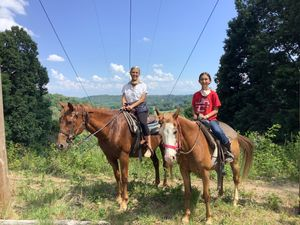

Girl Scout Name:
Girl Scout Badge: Horseback Riding
Girls must complete one activity from each of the 5 Steps of the badge.
1. Know the basics of horseback riding
May 9, 2021 - May 15, 2021
I checked out a whole bunch of encyclopedias at the library about horse care, and read about
- What a horse should eat
- How to groom a horse
- How to ride a horse
- What you should wear when riding a horse
- What to put on a horse before riding
The best book I found was The Horse Riding and Care Handbook by Bernadette Faurie.
2. Take care of a horse and learn about safety
June 3, 2021
My troop and I went to Misty Mountain Stables to learn how to muck out stalls and how to put a bridle, saddle, etc. on a horse before riding, and also took a short ride.
3. Prepare for your ride
July 9, 2021
I was taught how to saddle up, groom, and put a bridle on a horse by someone who works at Warrior's Path State Park. I saddled up a horse that I rode later that day.
4. Practice your ride
May 16, 2021
I went on a horseback ride at Warrior's Path State Park to see what it was like before taking classes. I actually learned a lot just from riding a horse, like how I should sit, how to hold the reins, and how to steer the horse.
5. Go for a ride
July 16, 2021
I took an hour long ride at Warrior's Path State Park. I tried to put everything I learned about riding up and down hills to use. The horse I rode was neck reined, so when the reins touched one side of her neck, she would turn the opposite direction. You're supposed to hold the reins in one hand with that kind of horse.
I chose this badge because...
I really like animals and being outside, and horseback riding would be something fun to do outside that is also safe during the pandemic.
My favority activity was...
I really liked learning how to saddle up and groom a horse, and hanging out with them when I'm not riding them.
This badge taught me about...
It taught me how to care for and ride horses well, and that there's more to riding a horse than just sitting on it.
The activities for this badge fit under these parts of the Girl Scout Law...
- Considerate and caring - If you own a horse, you can't just ride it, you also have to care for it and make sure it is comfortable and happy.
- Courageous and strong - If you're not courageous enough to boss around an animal twice the size of you, you won't be able to ride a horse.